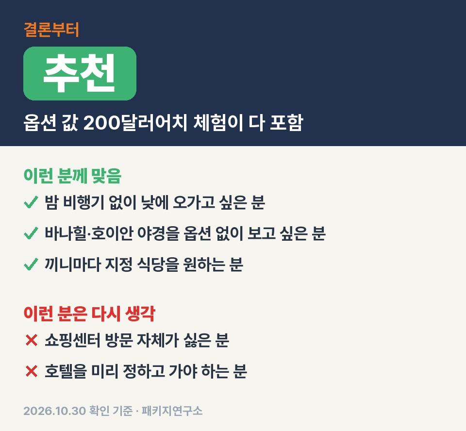
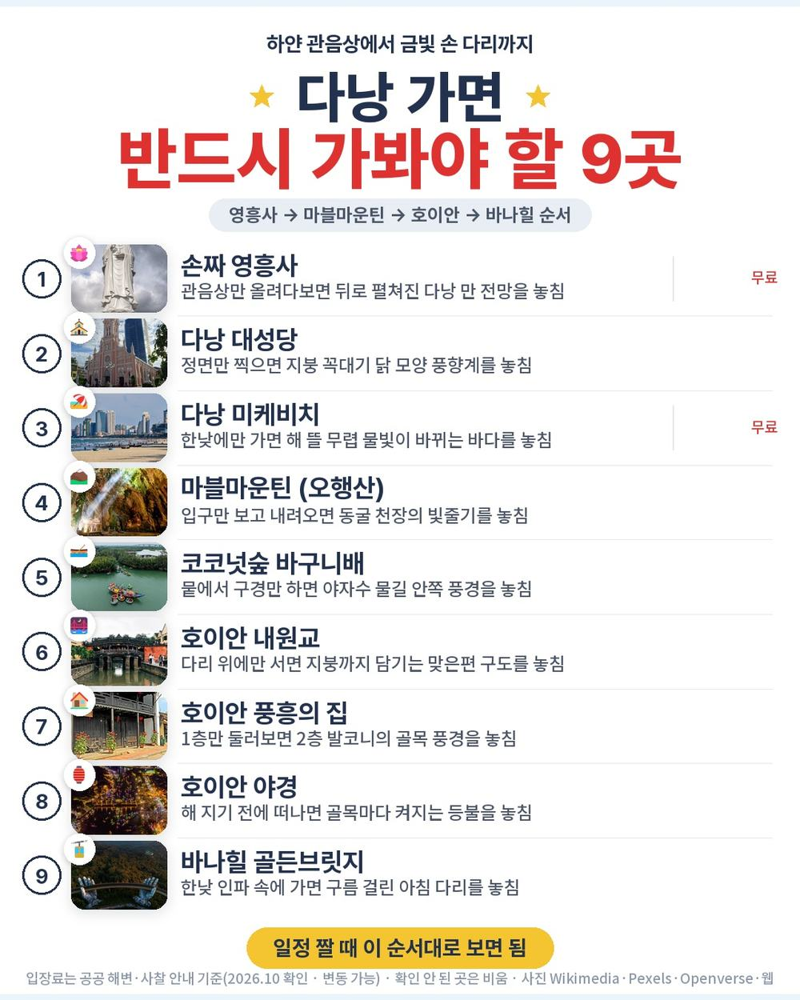
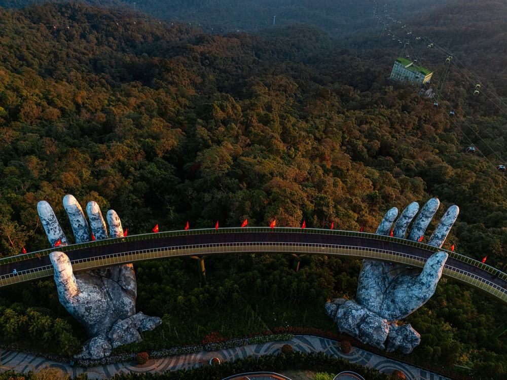
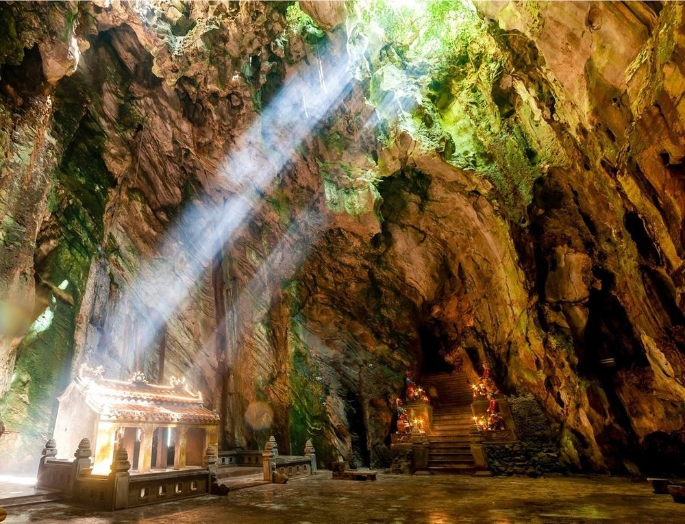

다낭 패키지 가이드 팁 참좋은여행 패키지 여행 64만 9천원, 바구니배·씨클로·마사지 값까지 들어간 낮 비행기 3박 4일
부모님 다낭 보내드리려고 현지에서 돈 더 나가는 상품부터 거르다가 이거 하나가 걸려서 불포함 칸까지 다 읽어 봤음.
직접 다녀온 후기는 아니고 참좋은여행 일정표랑 포함·불포함 원문을 하나씩 따져 본 글임.
결론 — 추천. 현지에서 꼭 내는 돈은 가이드·기사 경비 1인 40달러 하나뿐이고, 바구니배·씨클로·마사지 같은 체험 다섯 가지는 이미 값에 들어 있음. 다만 쇼핑센터 방문 자체가 싫으신 분은 맞지 않음.

오늘 기준 출발일별 요금 보기
https://package-researcher.github.io/d/danang.html?s=art

| 항목 | 내용 |
|---|---|
| 가격 | 1인 649,000원 (성인 · 11월 출발 기준) · 2인 1,298,000원 |
| 여행사 | 참좋은여행 |
| 항공 | 제주항공 직항 (7C2211·7C2212) · 인천 10:05 → 다낭 13:05 / 다낭 14:15 → 인천 20:40 |
| 숙소 | 5성 호텔 3박 (페닌슐라 다낭 · 포포인츠 바이 쉐라톤 · 래디슨 또는 동급, 출발 2~3일 전 확정 · 2인 1실) |
| 일정 | 3박 4일 · 버스 · 한국어 가이드 · 식사 9회 · 선택관광 없음 · 쇼핑 2회 · 가이드·기사 경비 1인 40달러 별도 |
▶ 내 출발일 오늘 기준 요금 확인 (제휴 링크 · 예약 시 수수료를 받으며 가격은 같습니다)
▶ 10월 30일 기준 다낭 패키지 최저 28만 900원부터 — 출발일별 값 한 화면에: 비교 페이지
| 번호 | 내용 | 한 줄 답 |
|---|---|---|
| 1 | 현장에서 더 낼 돈 한눈에 | 2인 약 10만 7천원 |
| 2 | 선택관광은 몇 개인지 | 0개 |
| 3 | 쇼핑센터 · 가이드 경비 · 팁 | 쇼핑 2회 · 경비 40달러 |
| 4 | 이 값에 이미 들어 있는 것 | 체험 5가지 200달러어치 |
| 5 | 일정과 체력 | 2일차가 제일 많이 걸음 |
1. 현장에서 더 낼 돈 한눈에
이 글은 현지에서 지갑 열 일만 따로 모아 봤음.
결론부터 말하면 반드시 내야 하는 돈은 한 줄임.
| 항목 | 금액 | 필수/선택 | 비고 |
|---|---|---|---|
| 가이드·기사 경비 | 80달러 | 필수 | 1인 40달러 × 2명 (아동 동일) |
| 선택관광 | 0원 | 없음 | 노옵션 상품 |
| 4일차 점심 | 사 먹는 만큼 | 선택 | 14:15 출발 전 공항에서, 기내식 없음 |
| 매너 팁 | 자율 | 선택 | 안 내도 불이익 없다고 원문에 적혀 있음 |
| 혼자 쓰는 방 | 250,000원 | 해당자만 | 1인 예약일 때 |
| 합계 (2인 필수분) | 80달러 (약 10만 7천원) | 1달러 1,340원 기준 |
두 분이 반드시 더 내는 돈은 가이드·기사 경비 80달러, 약 10만 7천원이 전부.
나머지는 안 하면 0원임. 상품가 129만 8천원에 이걸 더하면 두 분 약 140만 5천원, 한 분 약 70만 2천원.
달러는 경비 낼 만큼만 챙겨 가시면 됨.
2. 선택관광은 몇 개인지

선택관광 칸을 제일 먼저 봤는데 비어 있음. 원문 포인트에도 「현지 경비 부담이 없는 노옵션 일정」 이라고 적혀 있음.
솔직히 처음엔 노옵션이면 일정이 허전하겠거니 싶었음.
근데 다낭 상품에서 흔히 옵션으로 붙는 것들이 여기선 일정 안에 들어가 있음.
| 체험 | 원문 표기 값 |
|---|---|
| 코코넛숲 바구니배 | 40달러 |
| 야간 호이안 씨클로 | 50달러 |
| 차밍쇼 관람 | 40달러 |
| 아로마 스톤 마사지 (90분) | 40달러 |
| 한강 유람선 | 30달러 |
| 합계 | 200달러 |
가이드가 옵션을 권할 자리가 처음부터 일정에 채워져 있는 구조라 현지에서 고민할 게 없음.
3. 쇼핑센터 · 가이드 경비 · 팁
쇼핑은 두 번임. 노니·침향 매장과 커피 매장에 한 번씩, 각각 약 1시간.
원문에 「쇼핑센터 2회 방문 제한」 이라고 따로 적혀 있음. 사는 건 자유고 안 사도 됨.
가이드·기사 경비는 1인 40달러를 현지에서 냄. 상품가 밖이고 아동도 같은 값.
매너 팁은 원문에 자율이라고 되어 있고 안 낸다고 불이익은 없다고 함.
쇼핑 두 번이 이 상품에서 걸리는 거의 유일한 부분이라, 이게 괜찮으면 고민할 게 별로 없음.
쇼핑센터 방문 자체가 싫으신 분은 이 상품을 고르시면 안 됨.
이 상품 조건 한눈에 (출발일 달력·두 분 값·비슷한 상품과 비교)
https://pkg-lab.com/pkg/APP8838_7C34/?utm_source=ghpages&utm_medium=post&utm_campaign=daily
같은 목적지 다른 여행사 패키지, 쇼핑·선택관광·가이드 경비까지 비교
https://pkg-lab.com/dest/DAD/m/2026-11/?utm_source=ghpages&utm_medium=post&utm_campaign=daily
4. 이 값에 이미 들어 있는 것

64만 9천원에 들어 있는 걸 하나씩 세 보면 이럼.
- 제주항공 인천–다낭 직항 왕복 (갈 때 10:05 · 올 때 14:15 출발, 둘 다 낮)
- 5성 호텔 3박
- 식사 9회 중 6회가 지정 식당 (다낭타워 37층 스테이크 · 궁 한정식 · 목식당 또는 랑짜이 해산물 세트 · 바나힐 비어플라자 뷔페 · 호이안 가정식 · 쏨모이가든 분짜·반쎄오)
- 관광지 입장료 (영흥사 · 다낭 대성당 · 마블마운틴 · 호이안 구시가지 · 내원교 · 바나산 국립공원 등)
- 체험 다섯 가지 + CCCP 카페 음료 1인 1잔
- 최고 1억원 해외여행자보험 · 한국어 가이드 · 전용 버스
밤 비행기가 하나도 없는 게 은근 큼. 첫날 점심부터 일정이 시작되고 마지막 날도 오후 비행기라 아침이 급하지 않음.
| 항목 | 금액 | 근거 |
|---|---|---|
| 인천–다낭 왕복 항공 | 265,000원 | ICN↔DAD 직항 왕복 1인 (패키지와 같은 출발일 · 2026-10-30 마이리얼트립 조회) |
| 5성 호텔 3박 | 180,000원 | 2인 1실 1인분 (추정) |
| 체험 다섯 가지 | 268,000원 | 원문 표기 200달러 · 1달러 1,340원 |
| 식사 (9회) | 150,000원 | 지정 식당 포함 (추정) |
| 바나힐 입장 | 52,000원 | 케이블카 포함 1인 (추정) |
| 공항 이동 · 차량 | 80,000원 | 공항·호이안·바나힐 2인 나눔 (추정) |
| 여행자보험 · 유심 | 15,000원 | 4일 기준 (추정) |
| 가이드 | — | 자유여행은 없음 |
| 합계 | 약 1,010,000원 |
직접 짜면 1인 약 101만원, 패키지는 경비까지 더해 약 70만 2천원.
체험 다섯 가지를 다 하는 조건이면 패키지가 덜 듦. 체험을 빼고 호텔·항공만 보면 차이는 줄어듦.
5. 일정과 체력

| 일차 | 가는 곳 | 버스 | 걷기 | 점심 · 저녁 |
|---|---|---|---|---|
| DAY 1 | 10:05 인천 출발 → 13:05 다낭 → 영흥사 → 다낭 대성당 → 차밍쇼 → 한강 유람선 | 약 1.5시간 | 적음 | 분짜·반쎄오 · 궁 한정식 |
| DAY 2 | 미케비치 → 마블마운틴 → 호이안 바구니배 → 투본강 → 구시가지 도보 → 야간 씨클로 | 약 2시간 | 많음 | 다낭타워 스테이크 · 호이안 가정식 |
| DAY 3 | 스톤 마사지 90분 → 해산물 점심 → CCCP 커피 → 바나힐 케이블카·골든브릿지 | 약 2시간 | 보통 | 씨푸드 세트 · 비어플라자 뷔페 |
| DAY 4 | 호텔 조식 → 14:15 다낭 출발 → 20:40 인천 | 약 0.5시간 | 적음 | 없음 · 없음 |
부모님 체력은 둘째 날만 보시면 됨.
마블마운틴 돌계단이 닳아서 미끄럽다는 얘기가 많고 호이안 골목도 꽤 걸음. 운동화가 편함.
그래도 그날 밤 호이안은 씨클로에 앉아서 돌고 다음 날 아침이 마사지 90분이라 순서는 잘 짜여 있음.
바나힐은 산 위라 아래보다 서늘함. 사원에 갈 때도 무릎·어깨를 가리는 얇은 겉옷 하나 있으면 편함.
| 맞는 분 | 안 맞는 분 |
|---|---|
| 밤 비행기 없이 낮에 오가고 싶은 분 | 쇼핑센터 방문 자체가 싫은 분 |
| 바나힐·호이안 야경을 옵션 없이 보고 싶은 분 | 호텔을 미리 정하고 가야 하는 분 |
| 끼니마다 지정 식당을 원하는 분 |
자주 묻는 질문
Q. 다낭 패키지 가이드 팁은 얼마인가요?
A. 이 상품은 가이드·기사 경비 1인 40달러를 현지에서 냄. 아동도 같음. 매너 팁은 자율.
Q. 다낭 패키지 쇼핑센터는 몇 번 가나요?
A. 두 번. 노니·침향 매장과 커피 매장에 각각 약 1시간. 구매는 자유.
Q. 다낭 패키지 노옵션이면 바구니배나 마사지는 따로 내나요?
A. 안 냄. 바구니배·씨클로·차밍쇼·스톤 마사지·한강 유람선 다섯 가지가 일정에 들어 있음.
마무리
현지에서 꼭 나가는 돈이 경비 40달러 하나라 예산 잡기가 편한 상품.
쇼핑 두 번만 괜찮으시면 낮 비행기로 오가는 다낭·호이안 일정으로 꽤 알찬 편이라고 봄.
출발일마다 값이 달라서 가시려는 날짜 요금부터 보시면 됨.
오늘 기준 출발일별 요금 보기
https://package-researcher.github.io/d/danang.html?s=art
이 글에는 네이버 제휴 링크가 포함되어 있으며, 링크를 통해 예약하시면 일정 수수료를 받습니다. 가격은 동일합니다. 가격과 구성은 2026년 10월 30일 확인 기준이며 출발일에 따라 달라질 수 있습니다.
▶ 이 상품, 영상으로 보기 (유튜브)
▶ 다낭 패키지 오늘 값 나란히 비교
▶ 같은 목적지 다른 여행사 패키지, 쇼핑·선택관광·가이드 경비까지 비교: pkg-lab.com